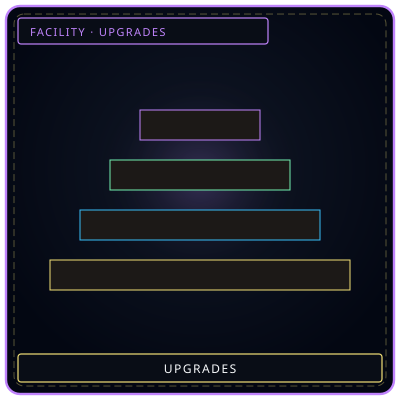
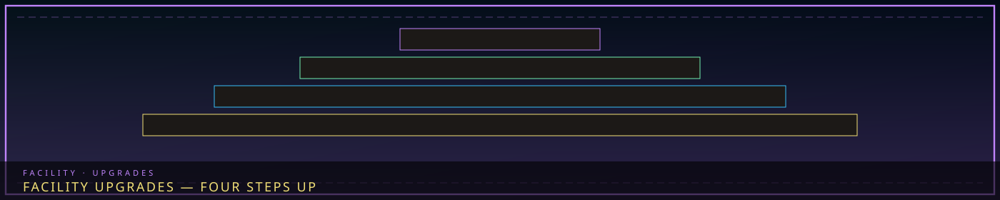
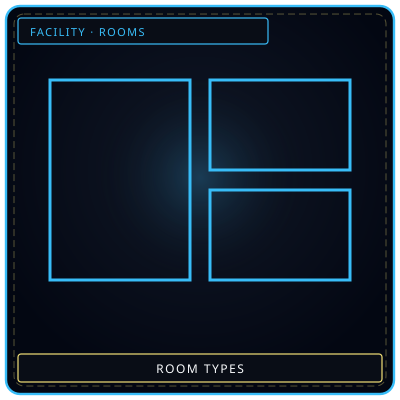
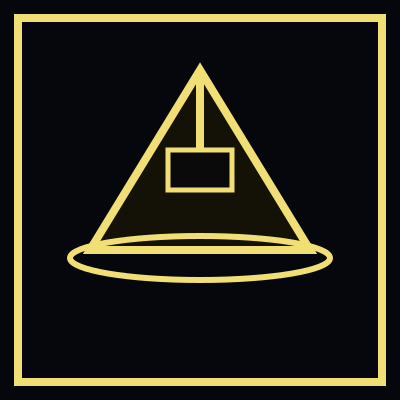

StackFour steps
/// RAPID JUMP:
STATUS: ARCHIVE VERIFIED |
CLEARANCE: LEVEL-4 OVERSIGHT |
PROTOCOL: REVERIE DIRECTORATE
ARTICLE
DISCUSSION
SOURCE
HISTORY
YEAR 4,238 · DAWN OF HOPE
FACILITY · GROWTH
Facility Upgrades
“Four bars climbing. The facility grows as a stack, not as a crowd.”


RoomsWhat changes
CommandWho signsOverview
Expansion phase sits between dawn briefing and deployment on the daily cycle. One improvement may be signed — dampeners, slits, ledgers, frames — before agents are posted. One improvement may be signed before agents are posted.
Facility upgrades are how the Hand of Change grows across cycles — cells, gauges, corridors, Mnemonic Generator load. Not Floor 1’s private construction budget. Architects build it. Extraction pays in Han-flux. Neutral Command approves it. The signature sits on Floor 1. The growth ledger lives here.
“The Hand of Change is not static. It grows. It adapts. It improves — because we improve it.”
Expansion sits between dawn briefing and deployment. One improvement may be signed before agents are posted: dampeners on Floor 2, a frame station on Floor 3, an aperture on Floor 4, a slit on Floor 5, ledger capacity on Floor 6, a fold on Floor 7, a tablet desk on Floor 8, alarm array on Floor 1. Architects design. Extraction pays Han-flux. Neutral Command approves. Floor 4 researches first if the tool is new knowledge. The signature sits on Floor 1. The growth ledger lives here. You do not unlock a ninth floor. You do not unlock Seiyon. Secret passages the Architects already built into Facility 01 are a debt the Directorate has not paid, not a line on this ledger.
Categories
| Category | What it is | Source |
|---|---|---|
| Containment | Stronger cells, better suppression | Floor 4 research + Floor 2 feedback |
| Extraction | Higher M.A.W. yield, lower risk | Floor 3 + Floor 4 |
| Research | Better tools, faster knowledge | Floor 4 innovation |
| Defense | Weapons, barriers, Zone E resistance | Floor 5 + Floor 4 design |
| Archive | Capacity, preservation | Floor 6 |
| Intelligence | Sensors, Shadow network | Floor 7 |
| Facility / welfare | Walls, conduits, Fracture rest rooms | Maintenance + Architects |
Each upgrade has a Han-Energy cost and a downtime. You do not upgrade Border Watch during a Tide Watch. Secret passages the Architects already built into Facility 01 are not an “upgrade” on this ledger — they are a debt the Directorate has not paid. Welfare rooms do not erase Panic; they buy a shift. Expansion that crosses a Han-flow line without a Sorrow Compass reading is how Floor 5 inherits a new aperture.
Containment upgrades come from Floor 4 research plus Floor 2 feedback — stronger cells, kinetic dampeners that stay kinetic. Extraction upgrades are Floor 3 plus Floor 4 — higher yield, lower risk, still not a loot wheel. Research upgrades are Floor 4's own tools. Defense is Floor 5 plus Floor 4 design — barriers, Zone E resistance; you do not upgrade the wall during a Tide Watch. Archive is Floor 6 capacity and preservation. Intelligence is Floor 7 sensors and network; informants are people, not a +10 on a sheet that forgot they burn. Facility and welfare are walls, conduits, Fracture rest rooms: they do not erase Panic; they buy a shift. Expansion that crosses a Han-flow line without a Sorrow Compass reading is how Floor 5 inherits a new aperture.
Need
Event, failure, or Floor 4 research.
Design
Architects. Extraction pays Han-flux.
Sign
Palm approves. One per expansion phase.
Build
Maintenance. Controlled test.
Staff
An unstaffed upgrade is an Ordeal spawn.
Process and examples
Need identified (event, failure, or research) → Floor 4 researches → Architects design → Echo-Core approves → Maintenance and Technicians build → controlled test → deployment.
| Upgrade | Floor | Effect | Cost |
|---|---|---|---|
| Reinforced containment cells | 2 | +20% suppression | 500 Han-Energy + Architect time |
| Enhanced extraction rigs | 3 | +15% M.A.W. yield | 300 + research |
| Extended Echo Compass | 4 | +50 m detection | 100 + materials |
| Border barrier enhancement | 5 | +30% Outside Sorrow resistance | 200 + Wardens |
| Deep Vault expansion | 6 | +1000 storage | 150 + construction |
| Shadow network expansion | 7 | +10 informants | Intelligence + Echoes |
| Han-conduit reinforcement | All | −50% leak chance | 400 + maintenance |
Facility Level tracks total capability: 1 Basic (start), 2 Reinforced (5 upgrades, +10% efficiency), 3 Advanced (15, +20%, new research), 4 Fortified (30, +30%, new containment types), 5 Sovereign (50, +40%, maximum). Architects are the only Head that wants the building to change. The Council resists because uncertainty makes Han. That fight is civic. This page is which valve, which cell, which cycle.
Need identified — event, failure, or research — then Floor 4 researches, Architects design, the Echo-Core of that floor approves, Maintenance and Technicians build, controlled test, deployment. Facility Level tracks total capability: 1 Basic at start; 2 Reinforced after 5 upgrades; 3 Advanced after 15; 4 Fortified after 30; 5 Sovereign after 50. Architects are the only Head that wants the building to change. The Council resists because uncertainty makes Han. That fight is civic. This page is which valve, which cell, which cycle. An upgrade nobody staffs is an Ordeal spawn. Sign assignment first, or do not pour the Han.
What expansion actually adds
The Hand signs tools: dampeners on Floor 2, a frame station on Floor 3, an aperture on Floor 4, a slit on Floor 5, ledger capacity on Floor 6, a fold on Floor 7, a tablet desk on Floor 8, alarm array on Floor 1. One per expansion phase, before deployment. Architects design. Extraction pays Han-flux. Neutral Command approves. Floor 4 researches first if the tool is new knowledge.
You do not unlock a ninth floor. You do not unlock Seiyon. Secret passages already in Facility 01 are a debt, not a line on this ledger. An upgrade nobody staffs is an Ordeal spawn. Sign assignment first. Freeze during Facility Meltdown and during Tide Watch — different alarms, same “no Architect crews in the corridor.”
One per expansion phase. The Hand signs tools, not floors. Joint Assignment on Floor 1 is research, not an upgrade slot, and still does not skip Dekan's keep. Three Frames on Floor 3 is research after named missions. Aperture Never an Eye on Floor 4 is the ladder's tool. Seven Tablets on Floor 8 does not become eight. Freeze during Facility Meltdown and during Tide Watch — different alarms, same “no Architect crews in the corridor.” Rebuild is a later cycle.
When it freezes
Facility Meltdown: no new cells, no new valves, no Architect crews in the corridors. Rebuild is a later cycle. Tide Watch is the same freeze, for a different alarm color. A completed upgrade that nobody staffs is just a new room for an Ordeal to spawn in. Sign the assignment first, or do not pour the Han. See assignment, meltdown, Architects.
Facility Meltdown: no new cells, no new valves, no Architect crews in the corridors. Tide Watch is the same freeze for a different alarm color. Core Suppression is one floor; you do not pour Han into a dream-construct. An Ordeal can land on a new unstaffed room. That is why assignment is signed first. See assignment, meltdown, Architects.